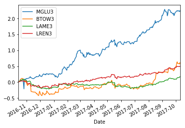
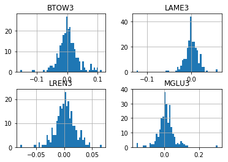
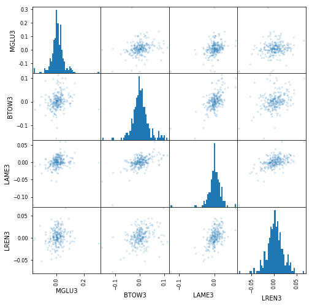

More statistics and Python
Simple linear regression
Introduction
This is again a collection of notes about stats and finance, with focus on covariance, correlation and simple linear regression, the idea here is to analyse some tools to measure risk. For a better representation let's get some Bovespa companies from the sector of Cyclic Consumption, they are: MGLU3, BTOW3, LAME3, LREN3.
Getting financial data
import pandas as pd
import numpy as np
import pandas_datareader as web
import matplotlib.pyplot as plt
from pandas.plotting import scatter_matrix
from datetime import datetime, timedelta
%matplotlib inline
end = datetime.now()
start = end - timedelta(days=365)
# Fetch historiacal data
sec_data = pd.DataFrame()
for symbol in ['MGLU3', 'BTOW3', 'LAME3', 'LREN3']:
sec_data[symbol] = web.DataReader('BVMF:{}'.format(symbol),
'google', start, end)['Close']
# Shift percent return
sec_returns = sec_data.pct_change(1)[1:]
# Plot the cumulative sum of return
sec_returns.cumsum().plot()
# Some numbers about the anual return
print(sec_returns.mean() * 250)
MGLU3 2.234703
BTOW3 0.577344
LAME3 0.173837
LREN3 0.497388
print(sec_returns.std() * 250 ** 0.5)
MGLU3 0.744661
BTOW3 0.534165
LAME3 0.261230
LREN3 0.290350
# Returns of the histogram
sec_returns.hist(bins=50);
Covariance
Study the relationship between values, this evaluates how the variables X and Y moves at the same time in relation it's mean values.
$$COV(a,b) = \frac{\sum_{k=1}(Ra - \overline{R}a) * (Rb - \overline{R}b)}{n}$$
sec_returns.var() * 250
MGLU3 0.554520
BTOW3 0.285332
LAME3 0.068241
LREN3 0.084303
# Covariance matrix
sec_returns.cov() * 250
MGLU3 BTOW3 LAME3 LREN3 IBOV
MGLU3 0.554520 0.091651 0.067703 0.038393 0.054705
BTOW3 0.091651 0.285332 0.079719 0.051221 0.048674
LAME3 0.067703 0.079719 0.068241 0.042511 0.034721
LREN3 0.038393 0.051221 0.042511 0.084303 0.040986
IBOV 0.054705 0.048674 0.034721 0.040986 0.042769
# Scatter matrix between stocks
scatter_matrix(sec_returns, figsize=(8,8), alpha=0.2, hist_kwds={'bins':50});
Correlation
Is simply a normalized form of covariance.
$$ CORRx,y = \frac{COVx,y}{\sigma{x}*\sigma{y}} $$
sec_returns.corr()
MGLU3 BTOW3 LAME3 LREN3 IBOV
MGLU3 1.000000 0.230411 0.348039 0.177572 0.355224
BTOW3 0.230411 1.000000 0.571298 0.330259 0.440611
LAME3 0.348039 0.571298 1.000000 0.560470 0.642699
LREN3 0.177572 0.330259 0.560470 1.000000 0.682574
IBOV 0.355224 0.440611 0.642699 0.682574 1.000000Linear Regression
$$ Y = \beta + \alpha * X $$
import statsmodels.api as sm
# Fetch Ibovespa index
sec_returns['IBOV'] = web.DataReader(
'INDEXBVMF:IBOV'.format(symbol), 'google', start, end
)['Close'].pct_change(1)[1:]
print(sec_returns.head())
MGLU3 BTOW3 LAME3 LREN3 IBOV
Date
2016-10-14 0.028029 0.004507 0.027834 0.012278 0.010613
2016-10-17 -0.010554 0.038462 0.009247 0.011292 0.015039
2016-10-18 0.011556 0.039506 0.024869 0.015302 0.017323
2016-10-19 0.010545 0.010689 0.001916 -0.001629 -0.004337
2016-10-20 0.000000 0.013514 -0.001912 0.001632 0.005232
# Calculate the alfa and beta for LAME3
X = sec_returns['IBOV']
Y = sec_returns['LAME3']
result = sm.regression.linear_model.OLS(Y, sm.add_constant(X)).fit()
result.summary()
OLS Regression Results
==============================================================================
Dep. Variable: LAME3 R-squared: 0.413
Model: OLS Adj. R-squared: 0.411
Method: Least Squares F-statistic: 173.1
Date: Thu, 12 Oct 2017 Prob (F-statistic): 2.71e-30
Time: 21:31:42 Log-Likelihood: 732.24
No. Observations: 248 AIC: -1460.
Df Residuals: 246 BIC: -1453.
Df Model: 1
Covariance Type: nonrobust
==============================================================================
coef std err t P>|t| [0.025 0.975]
------------------------------------------------------------------------------
const -0.0001 0.001 -0.144 0.885 -0.002 0.001
IBOV 0.8118 0.062 13.158 0.000 0.690 0.933
==============================================================================
Omnibus: 14.069 Durbin-Watson: 2.021
Prob(Omnibus): 0.001 Jarque-Bera (JB): 30.752
Skew: -0.205 Prob(JB): 2.10e-07
Kurtosis: 4.675 Cond. No. 76.6
==============================================================================
a = result.params[0]
b = result.params[1]
X2 = np.linspace(X.min(), X.max(), 100)
Y_hat = X2 * b + a
plt.scatter(X, Y, alpha=0.3);
plt.plot(X2, Y_hat, 'r', alpha=0.9);
plt.xlabel('Ibov Value');
plt.ylabel('LAME3 Value');
*** Exercises: Suppose those are the grades of some students, answer the following:
# a) what is the correlation coeficient of these variables and the type of relation
# b) construct the equation finding alfa and beta
# c) If the student takes a 6.5 on math what is his note in biology?
from scipy import stats
df = pd.DataFrame({
'math': [9.5, 9, 8.5, 8.0, 8.0, 7.5, 7.5, 6.0, 5.0, 4.0],
'bio': [3.4, 5.4, 6, 6, 5, 7, 9, 7.5, 8, 8]
})
df['x.y'] = df['math'] * df['bio']
df['x2'] = round(df['math'] ** 2, 1)
df['y2'] = round(df['bio'] ** 2, 1)
plt.scatter(df['math'], df['bio']){kind=link}
Answer:
a)
np.corrcoef(df['math'], df['bio'])[0][1]
-0.73842044735499168
b)
stat = stats.linregress(df['math'], df['bio'])
slope = -0.7042
intercept = 11.67117
c) stat.intercept + (stat.slope * 6.5)
7.0934163701067607ANOVA
Variance analysis is a way to test the validity of a null hypothesis and check if the arithmetic means of two or populations are equal. For this case, it is being analyzed three different methods of teaching, and the student's grade for each method, having a significance level of 1%.
import pandas as pd
%matplotlib inline
data = pd.DataFrame({
'I': [48, 73, 51, 65, 87],
'II': [55, 85, 70, 69, 90],
'III': [84, 68, 95, 74, 67]
})
data.boxplot()

Testing in 4 steps
- The first step is declare the null hypothesis and the alternative hypothese
H0: u1 = u2 = u3
H1: The means aren't equal.
- Defining the critical region
For setting the degree of freedom we have, being k the number of methods and n the total number of observations:
df1: k - 1 = 3 - 1 = 2
df2: n - k = 15 - 3 = 12
Following the df(2,12) we can find the critical value = 6.93 in the F distribution table with an alpha of 0.01
http://www.socr.ucla.edu/applets.dir/f_table.html#FTable0.01
- We can use scipy stats to fetch the F-value between the three methods
import scipy.stats as stats
f_value, _ = stats.f_oneway(data['I'], data['II'], data['III'])
1.092717464598786- Take a decision
We have the F_value = 1.09 < critical_value = 6.93, and cannot reject the null hypothesis what finishes the conclusion: the arithmetic mean are equal for the three population
Exercises
A director of a company wants to buy a new screw machine, you must learn about the brands from a determined period each one independently makes the following number of screws, our null hypothesis here is to confirm there's no difference between the mean volume of pieces each machine can build. The significance level is 5%.
import numpy as np
machine_I = np.array([8, 6, 5, 6, 7])
machine_II = np.array([10, 8, 12, 7, 9, 10, 11])
machine_III = np.array([7, 5, 8, 6, 7, 5])
n = len(machine_I) + len(machine_II) + len(machine_III)
k = 3
# Defining the degrees of freedom
df1 = k - 1
df2 = n - k
# dg(2,15)
np_m1 = round(machine_I.mean(), 2)
np_m2 = round(machine_II.mean(), 2)
np_m3 = round(machine_III.mean(), 2)
# 6.4 9.57 6.33
total_mean = (np_m1 + np_m2 + np_m3) / k
# 7.43333333333
# Calculating the sum of squares due to the source BETWEEN
SSB = (
(len(machine_I) * (np_m1 - total_mean) ** 2) +
(len(machine_II) * (np_m2 - total_mean) ** 2) +
(len(machine_III) * (np_m3 - total_mean) ** 2)
)
# 44.6003666667
MSB = SSB / df1
# 22.3001833333
# Calculating the sum of squares due to the source RESIDUAL
SSE1 = round(((np_m1 - machine_I)**2).sum(), 2)
SSE2 = round(((np_m2 - machine_II)**2).sum(), 2)
SSE3 = round(((np_m3 - machine_III)**2).sum(), 2)
# 5.2 17.71 7.33
total_SSE = sum([SSE1, SSE2, SSE3])
# 30.24
MSE = total_SSB / df2
# 2.016
F_value = MSE / MSB
# 11.06
# for alpha = 0.5 - http://www.socr.ucla.edu/applets.dir/f_table.html#FTable0.05
null_hypothesis_true = f_value > 3.68
| source | SS | DF | MS | F |
| ------ | ------ | -- | ------ | ----- |
| factor | 44.60 | 2 | 22.30 | 11.06 |
| error | 30.24 | 15 | 2.01 | |
| total | 74.84 | 17 | | |